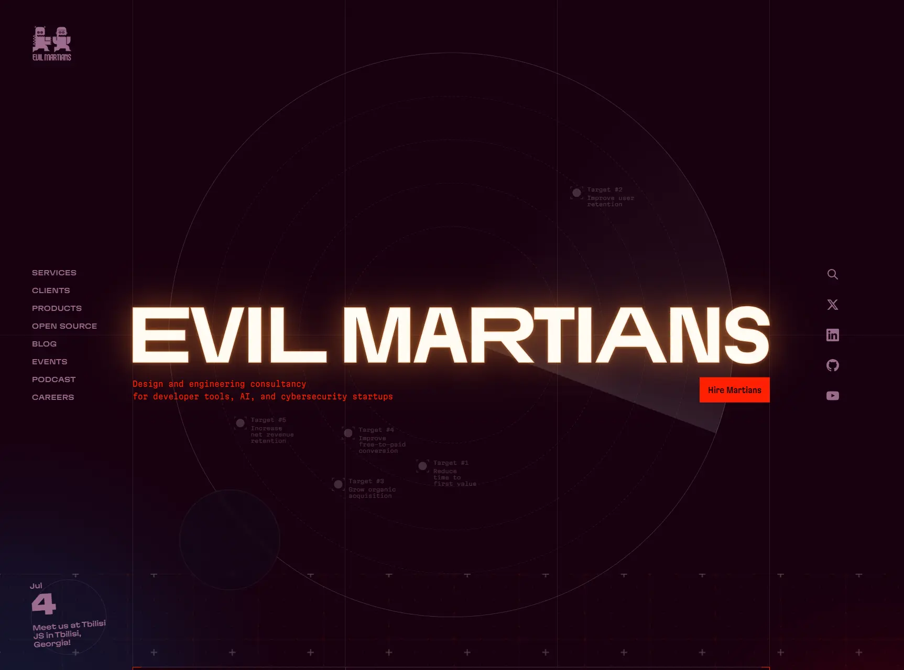

Evil Martians
- Корпоративный
- Агентства и студии
- Студия разработки
- Разработчикам
- Продуктовым командам
- Агентствам
- Утилитарный техно
- Редакционный
- Тёмная тема
- Фиолетовый фон
- Кастомный курсор
- Микроанимации
- Визуализация данных
- Astro
- imgproxy
- Английский язык
- Действующий сайт

Что это
Сайт консалтинговой студии Evil Martians: тёмный первый экран с радаром, огромным названием и оранжевыми акцентами. Отдельная страница PMF Compass — калькулятор продуктового рынка для разработчиков: девять вводных, оценка продуктовых и денежных сигналов, стадия product-market fit и приоритетные рекомендации. Вдохновляющий тёмный сайт консалтинговой студии, которая помогает стартапам делать сложные технологические продукты: инструменты для разработчиков, ИИ-сервисы и многое другое. Интересный калькулятор Product Market Fit, который решает сразу две задачи: с одной стороны, вовлекает потенциальных клиентов во взаимодействие, а с другой — наглядно показывает экспертизу студии.
Что смотреть в первую очередь
Смотреть тёмный первый экран с радаром и пройти PMF Compass: девять вводных, стадия и рекомендации.
Приёмы
- Кастомный курсор
- Микроанимации
- Визуализация данных
Интересные факты
- Первый экран почти чёрный, с фиолетовым отливом: огромное EVIL MARTIANS, оранжевый подзаголовок и кнопка Hire Martians.
- За заголовком — радар с подписями целей: сократить time to first value, улучшить конверсию в платных, поднять net revenue retention, улучшить квалификацию лидов и органический приток.
- PMF Compass — отдельная страница: девять вводных (категория, go-to-market, ARR, time to first value, D7 retention, annual logo retention, organic signup, free-to-paid, NRR).
- Калькулятор отдельно оценивает продуктовые и денежные сигналы, определяет стадию product-market fit и выдаёт приоритетные рекомендации.
- Слева — SERVICES, CLIENTS, PRODUCTS, OPEN SOURCE, BLOG, EVENTS, PODCAST, CAREERS; справа — соцсети и поиск.
- Собрано на Astro, картинки идут через imgproxy, аналитика — Google Tag Manager.
Паспорт
- Домен
- evilmartians.com
- Тип сайта
- Корпоративный
- Категории
- Агентства и студии
- Подкатегории
- Студия разработки
- Для кого
- Разработчикам, Продуктовым командам, Агентствам
- Стиль
- Утилитарный техно, Редакционный
- Язык
- Английский
- Страна
- не указано
- Автор
- Evil Martians
- Год
- не указано
- Добавлен в коллекцию
- 18.11.2026
Палитра
-
#1A0210— 92% кадра -
#47231F— 3% кадра -
#FEFAF0— 3% кадра -
#6D3821— 1% кадра -
#8D6882— 0% кадра
- Режим
- Тёмная
- Цвет фона
- Фиолетовый
Технологии
- Astro
- imgproxy